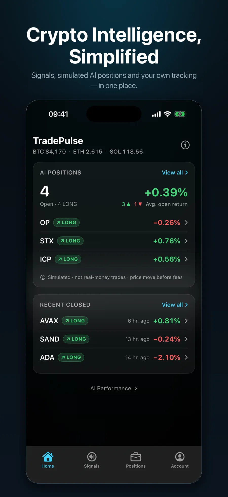
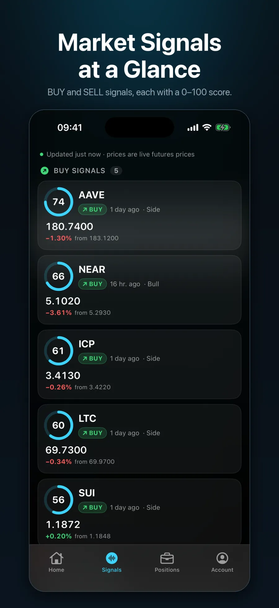
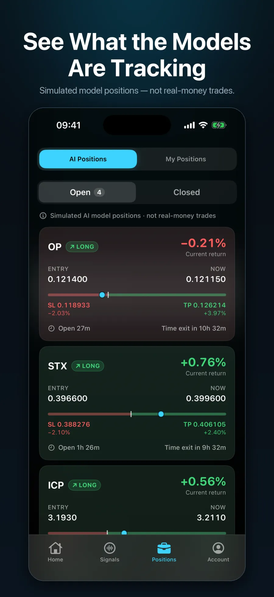
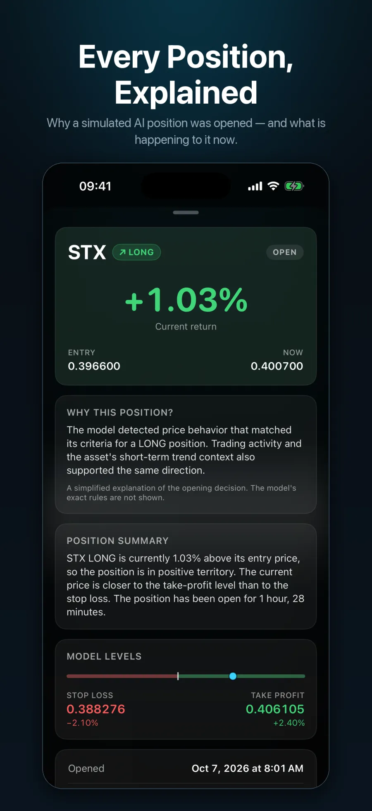
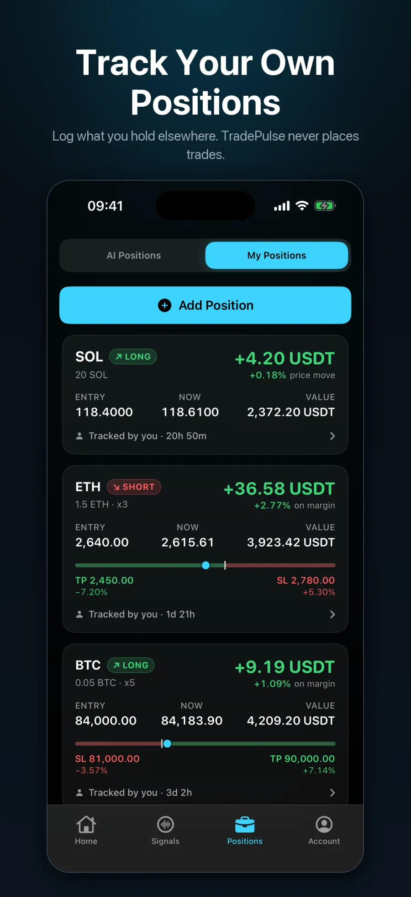

iPhone & iPad · Free download
Crypto signals, with the indicators shown.
TradePulse shows BUY, SELL and Watchlist signals together with the indicators behind them, simulated model positions, and a private tracker for positions you hold elsewhere. Information and education only, not financial advice.
Free download with an optional Pro subscription · iOS 17 or later · 18+


Signals
Signals you can read.
BUY, SELL and Watchlist signals for a list of major crypto futures pairs, recalculated every hour on 1-hour candles. Each one shows RSI, trend strength, volatility and liquidity, the market regime and timeframe, and the price at the signal next to the current futures price.
The 0–100 score shows how strongly the model's inputs agree. It is not a probability of profit, and a high score does not mean a trade will work. How to read a signal score.

AI Positions
See what the models are doing.
AI Positions are opened by TradePulse's models in simulation. No real money is traded. Each one shows its entry, the current price, its return before fees, and its take-profit, stop-loss or time exit. Closed positions keep their result, losses included.

Why this position? · Pro
A plain-language reason.
For each simulated position, Pro shows a simplified description of the kind of market evidence behind its opening, plus a summary of what is happening to it now: price versus entry, levels and time open. It does not reveal the model's exact rules.

My Positions
Track what you hold elsewhere.
Log a position you hold on an exchange: symbol, direction, entry, size, and optionally leverage, take profit and stop loss. TradePulse shows its live profit or loss from public futures prices. Your entries are stored only on your device, and TradePulse never places, copies or manages trades.
How it works
What is behind each signal.
Every score comes from standard technical indicators calculated from public market data.
RSI
14-period momentum on a 0–100 scale. What RSI measures.
Trend & regime
Direction and strength from moving averages. Trending vs ranging.
Volatility
How far price typically moves per candle. Volatility explained.
Liquidity
How much is actually trading. Liquidity explained.
- What the "AI" models are. TradePulse's models are rule-based and statistical: fixed rules and thresholds applied to price and volume data, with thresholds chosen from analysis of historical market data. They do not use machine learning or a language model, and they do not learn from your activity.
- Signals. Recalculated every hour for each covered pair. A label (BUY, SELL or Watchlist) comes with a 0–100 score that shows how strongly the inputs agree. The score is not a forecast or a probability of profit.
- AI Positions. Simulated positions opened by the models, shown before fees, with no real money involved. Simulated results are not executed trades and do not predict future results.
- My Positions. Positions you enter yourself, kept on your device. TradePulse never connects to your exchange account or trades for you.
Free and Pro
What is included.
Free
- The first 3 signals in each signal list
- The 2 most recent open and 2 most recent closed AI Positions
- Up to 3 positions in My Positions
- BUY and SELL signal notifications
TradePulse Pro
- Full signal lists
- Every open and closed AI Position, with details
- "Why this position?" explanations
- AI Performance for the simulated positions
- Unlimited My Positions
TradePulse Pro is an optional auto-renewing monthly subscription. The price for your region is shown in the app before you subscribe, and eligible new subscribers may be offered a free trial. Manage or cancel in your Apple ID settings.
FAQ
Questions, answered.
Does TradePulse AI give financial advice?
No. TradePulse AI provides market information and education only. It does not know your finances or goals, it does not give personal recommendations, and every decision is your own.
What does the 0–100 signal score mean?
It shows how strongly the model's inputs (trend, volatility, liquidity, RSI and MACD momentum) line up with the conditions the model looks for. It is not a probability of profit and not a prediction. See how to read a signal score.
Is "AI" in TradePulse machine learning?
No. "AI Positions" and "AI Performance" are feature names for the output of rule-based, statistical models: fixed rules and thresholds applied to price and volume data. They do not use machine learning or a language model.
Are AI Positions real trades?
No. They are simulated positions opened by the models. No real money is traded, returns are shown before fees, and simulated results do not guarantee or predict future results.
Is TradePulse AI free?
The app is free to download and includes a limited set of signals, AI Positions and My Positions. TradePulse Pro is an optional monthly subscription that unlocks full lists, position details, "Why this position?" and AI Performance.
Does TradePulse connect to my exchange or place trades?
No. There is no exchange login. Positions you add to My Positions are stored on your device, and TradePulse never places, copies or manages trades.
Is my data private?
We don't sell, rent, or trade your personal data. See the Privacy Policy for details on what is collected.
Which devices does it run on?
iPhone and iPad running iOS or iPadOS 17 or later. The app is available in English, French, German, Japanese, Korean, Portuguese, Spanish and Turkish.
Learn
Indicator guides
Plain-language explanations of the indicators shown in the app.
What is RSI in crypto?
How the Relative Strength Index is calculated and how to read it.
How to read a signal score
Composite scores, confluence and what a score can't tell you.
Trending vs ranging markets
What a market regime is and how it changes indicator readings.
Volatility and liquidity
ATR, volume, spreads and slippage, explained.
See the market data for yourself.
Free to download on iPhone and iPad.
TradePulse AI provides information and education only and is not financial, investment or trading advice. Signals, scores and simulated AI Positions do not guarantee any result, and past or simulated performance does not predict future results. Crypto trading, especially with leverage, carries a high risk of loss. All decisions are your own. Intended for adults 18+.